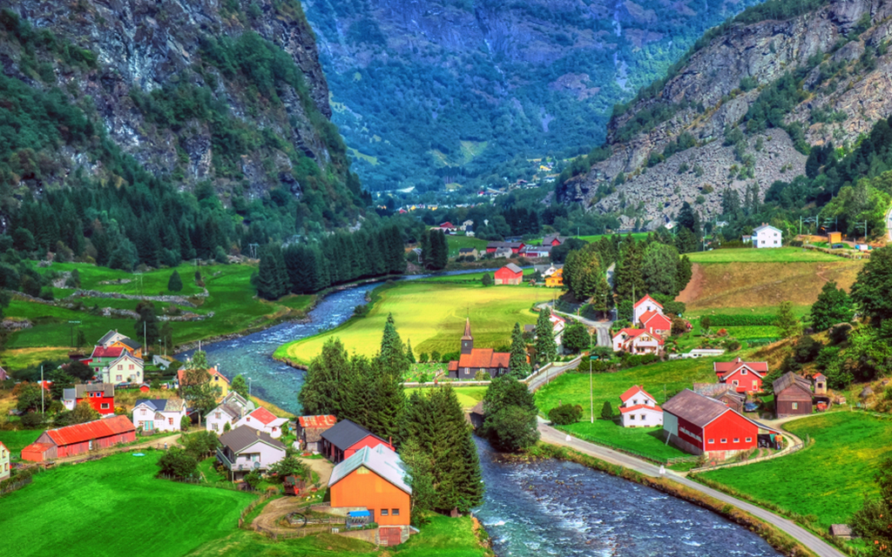

|  |
✭ EnvironmentalistFounder & CTO of Flavex Leading the world's greatest environmental revolution company Aiming to achieve 70% recylable product |
I am the founder of Flavex.Our companies aim is to provide sustainable energy using Seattle based Biomechanical machine omniprocessor.Which uses animal and human faeces to convert them into electricity, drinkable water and ash.Biomass Controls PBC is a U.S. Delaware Public Benefit Corporation that delivered the first Biogenic Refinery (OP) prototype to New Delhi, India in 2014 in partnership with the Climate Foundation. This system was designed to process non-sewered sanitation for populations between 100 and 10,000 people. The prototype was funded by the Bill and Melinda Gates Foundation. In 2016 a Biogenic Refinery was delivered to Kivalina, Alaska for the processing of Urine Diverting Dry Toilets (UDDT) as part of the Alaska Water & Sewer Challenge.[4] In 2017, three systems were shipped to India and installed in the cities of Wai, Warangal and Narsapur in partnership with Tide Technocrats. In 2018 a prototype was shown that can generate electricity (mCHP) from the thermal energy from the processing of fecal sludge at the Bill & Melinda Gates Foundation reinvented toilet event in Beijing, China.[5] In 2019, a system was set up at a dairy farm to process the separated solids from cow manure. This system demonstrated a significant reduction in greenhouse gas emissions while reducing solids volume by over 90% and producing biochar.
| JavaScript | ★★★★★ | Communication | ★★ | |
| Embedded C | ★★★ | Health | ★★★★★ | |
| Speaking | ★★★ |